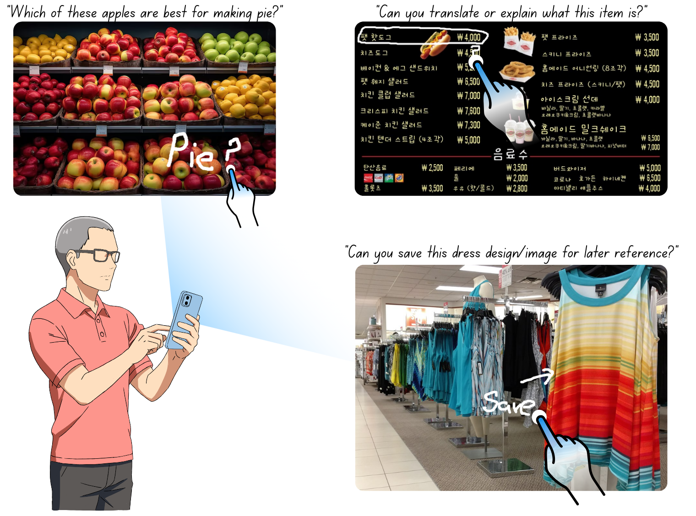
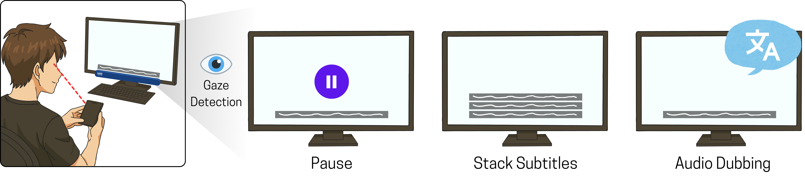
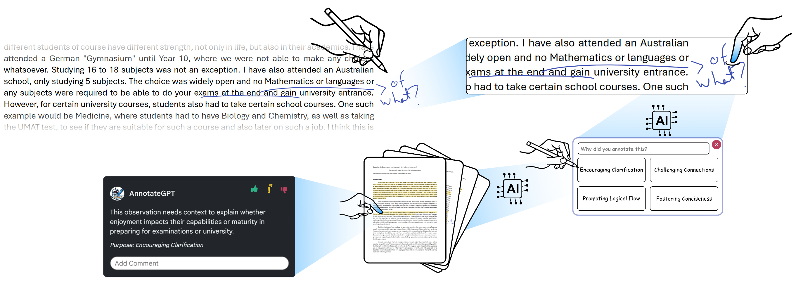
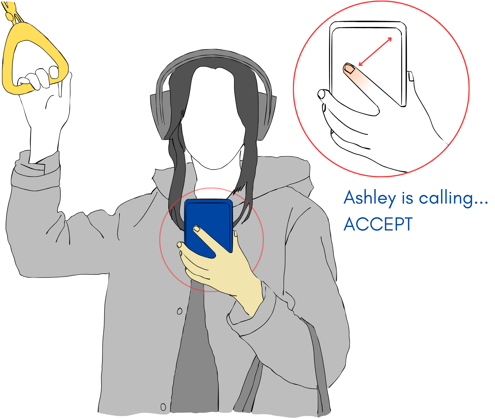
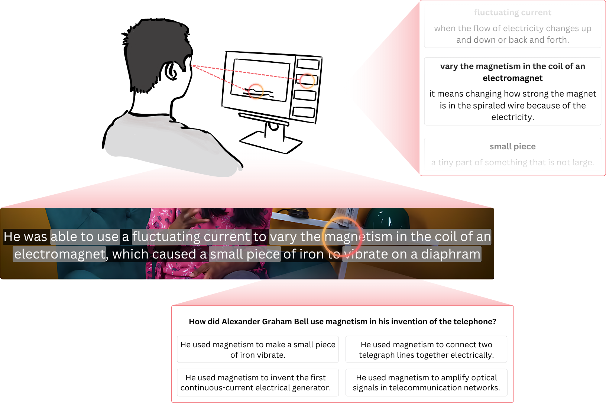
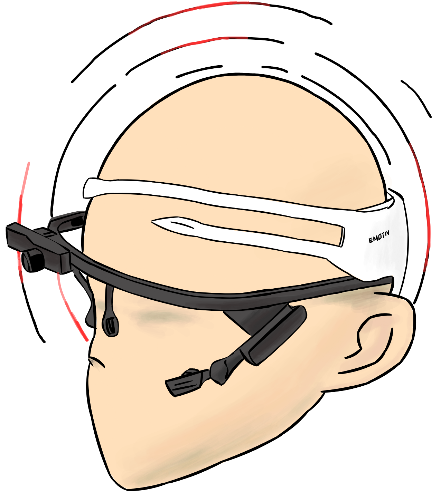
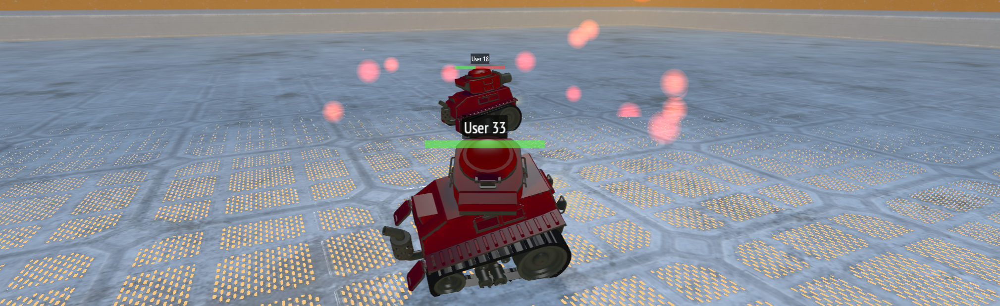
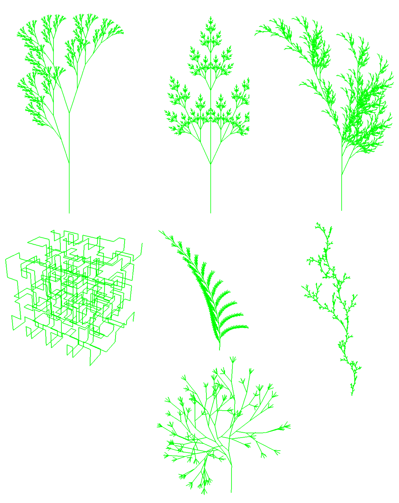
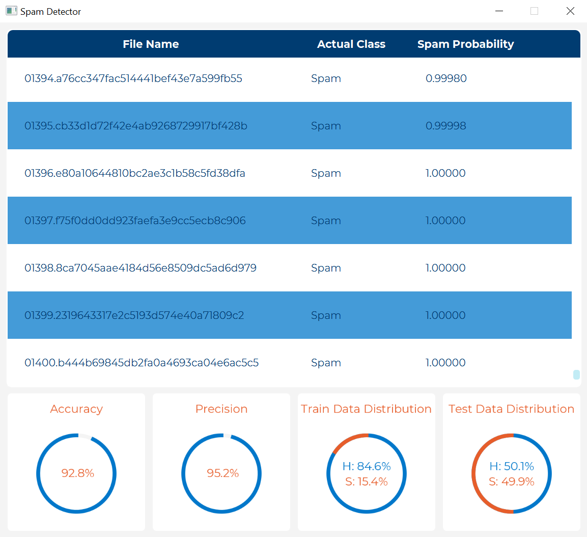
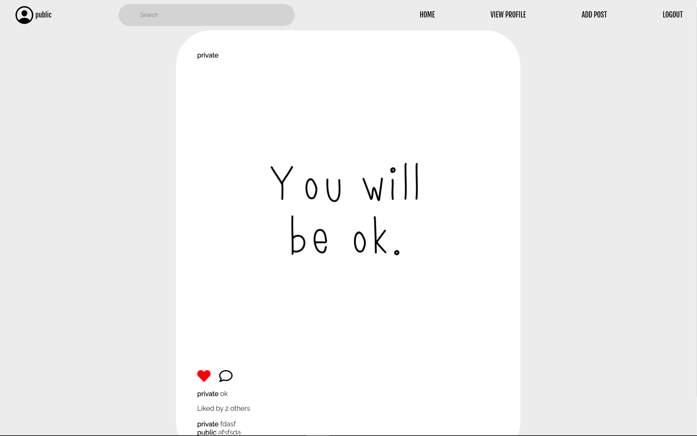

MSc Thesis
Implicit Pen Annotation Assisted by Large Language Models
Hi! My name is Benedict, but you can call me Ben for short. I am a Master computer science student at Ontario Tech University. My research area is human-computer interaction, focusing on novel interactions with hardware like pen-based devices, eye-tracking, and brain computer interfaces. Recently, my research has been creating interactions with Large Language Models.
When I was young, around third grade, I was passionate about being an inventor, in the sense that I wanted to create something never made before and use it to help people who couldn't do a specific task. But that morphed when I was introduced to computer programming. I was amused by how you can put your "heart and soul" into a program and do exactly what you envisioned, meaning your legacy can be imprinted into your programs for generations. My desired legacy is to give to people worldwide, like aiding the blind or advancing neural interfaces. These "dreams" may seem distant, but someone must take the first step, even if no one is willing.
My work explores the intersection of sensing hardware, AI, and human experience.

Gaze-Aware Implicit Interventions for Distraction Recovery in Foreign-Language Videos

Designing Human-AI Collaboration in Pen-Based Document Annotation

Exploring the Feasibility of Back-of-Device Swipe Interaction Using Built-In IMU Sensors

Gaze-Driven Question Generation for Personalized Learning from Short Educational Videos

Combining Eye-Tracking and Brain-Computer Interfaces for Context-Aware Hands-Free Camera Interaction

Browser-based tank shooter built with Three.js featuring custom physics and shaders.

Generates L-system fractals using OpenGL.

Email spam classification using heuristic analysis.

Mocks the basic features of Instagram.
Currently looking for new opportunities in HCI research.